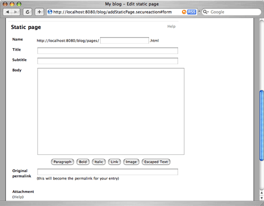

@header@

<table width="100%" cellspacing="0" cellpadding="8" class="item">
  <tr class="itemHeader">
    <td>
      Static Pages
    </td>
  </tr>
  <tr class="itemBody">
    <td>

      <p>
      Although most of the content on a blog consists of blog entries, there may be times where you'd like to include some static content as a part of your website. For example, you might want to have an "About me" page, or a page containing links to other sites that you find useful. Although you could have a separate web application serving up this content, Pebble provides a simple way to manage small amounts of static content with the following benefits.
      <ul>
        <li>Pages are included in the search feature.</li>
        <li>Pages are included in your referrers/visited pages statistics.</li>
        <li>Pages and blog entries have a consistent look and feel.</li>
      </ul>
      Effectively, a static page is just a blog entry that doesn't have comments/TrackBacks and has a memorable permalink such as <code>http://.../blog/pages/aboutme.html</code>.
      </p>

      <p>
      <h5>Adding a Static Page</h5>
      To add a static page, click the <b>New static page</b> link after logging in. This will display a page similar to the blog entry page.
      The only real difference between this and the blog entry page is the <b>Name</b> field at the top. This makes up the memorable permalink to the page and the name you give a page must only contain alphanumeric characters, numbers, '-', '_' or /'. Examples include aboutme, articles/SomeArticleName, and so on.
      </p>

      <div align="center">
        
      </div>

      <p>
      To manage your static pages, click the <b>Static pages</b> link after logging in. This will open a page showing a list of all static pages that currently exist, with links to edit and delete them.
      </p>

    </td>
  </tr>
</table>

@footer@